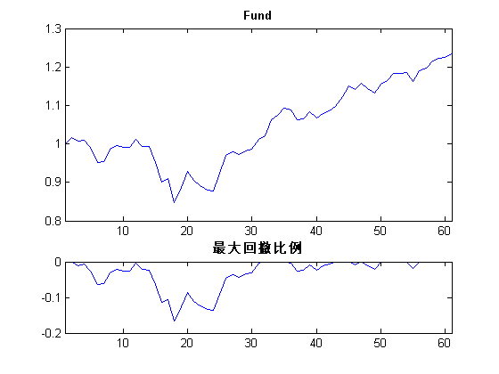

《量化投资：以MATLAB为工具》-基础篇-N分钟学会MATLAB(60<N<180)
Learn Matlab Using N minutes(60<N<180)
by LiYang
Email:farutoliyang@gmail.com
Last Updated 2013/08
Contents
- A Little Clean Work
- 能否简单举一个MATLAB的例子？
- 如何查看函数的代码？
- MATLAB里面可以使用科学计数法么？
- 如何恢复MATLAB的文件关联？
- MATLAB可以读Excel的数据？
- 如何删掉缺失值？
- 如何将字符串转变为命令执行？
- 如何向一个向量追加元素？
- 如何移除矩阵的某行（列）数据？
- 如何比较两个矩阵是否相同呢？
- 如何去掉数据中的重复元素？
- 如何求数据的极值？
- 如何求矩阵最大(小)值并返回其行列号？
- 如何从一组数据中随机抽取数据？
- 如何将数据标准化？
- 如何计算积分？
- MATLAB如何进行复数计算？
- 如何生成对角矩阵？
- 如何构造上（下）三角矩阵？
- MATLAB常用的运算符号有哪些？
- 如何求矩阵各行（列）的均值？
- 如何计算组合数或得到所有组合？
- 如何在MATLAB里面求（偏）导数？
- 如何求一元方程的根？
- 如何在字符串中选取特定位置的字符？
- 如何返回字符个数？
- 日期可以做算术运算么？
- 如何将日期表示为“07-Aug- 2013”这种格式？
- 如何在同一画面画出多张图？
- 怎么做饼图？
- MATLAB如何做双坐标？
- 如果绘图时标题太长，如何换行？
- 如何用不同的颜色来代表数据？
- 如何调整所绘图形的大小？
- 如何绘制椭圆或双曲线？
- 在MATLAB中如何绘制K线图？
- 如何做线性回归模型？
- 如何做主成分分析？
- 多项式回归应该用什么函数？
- 如何做聚类分析？
- 如何利用MATLAB获取免费的金融数据？
- 在MATLAB中如何处理地图数据？
- 如何计算一个资金流的最大回撤？
- Test
- Record Time
A Little Clean Work
tic; clear; clc; close all; format compact;
能否简单举一个MATLAB的例子？
Mean_Value = 0;
STD_Value = 1;
Data_Num = 100;
x = random('Normal', Mean_Value, STD_Value, Data_Num, 1);
x_dataset = dataset(x);
whos
mean_x = mean(x)
std_x = std(x)
summary(x_dataset)
Name Size Bytes Class Attributes
Data_Num 1x1 8 double
Mean_Value 1x1 8 double
STD_Value 1x1 8 double
x 100x1 800 double
x_dataset 100x1 1784 dataset
mean_x =
0.1861
std_x =
1.0350
x: [100x1 double]
min 1st quartile median 3rd quartile max
-2.2751 -0.51495 0.20808 0.90037 2.7304
如何查看函数的代码？
edit mean;
MATLAB里面可以使用科学计数法么？
format longG 1e10 1.2e-4 format short
ans =
10000000000
ans =
0.00012
如何恢复MATLAB的文件关联？
cwd=pwd; cd([matlabroot '\toolbox\matlab\winfun\private']); fileassoc('add',{'.m','.mat','.fig','.p','.mdl',['.' mexext]});%重点 cd(cwd); disp('Changed Windows file associations. FIG, M, MAT, MDL, MEX, andP files are now associated with MATLAB.')
Changed Windows file associations. FIG, M, MAT, MDL, MEX, andP files are now associated with MATLAB.
MATLAB可以读Excel的数据？
values = {1, 2, 3 ; 4, 5, 'x' ; 7, 8, 9};
headers = {'First', 'Second', 'Third'};
xlswrite('eg_Mat2Excel.xlsx', [headers; values]);
A = xlsread('eg_Mat2Excel.xlsx')
A =
1 2 3
4 5 NaN
7 8 9
如何删掉缺失值？
A = [1 NaN 3] A( isnan(A) ) = []
A =
1 NaN 3
A =
1 3
如何将字符串转变为命令执行？
A = 3;
B = 5;
string = [num2str(A),'+',num2str(B)]
eval(string);
string =
3+5
ans =
8
如何向一个向量追加元素？
A = [1 2 3 4] A(end+1) = 5
A =
1 2 3 4
A =
1 2 3 4 5
如何移除矩阵的某行（列）数据？
A = magic(5) B = A; C = A; B(5,:) = [] C(:,5) = []
A =
17 24 1 8 15
23 5 7 14 16
4 6 13 20 22
10 12 19 21 3
11 18 25 2 9
B =
17 24 1 8 15
23 5 7 14 16
4 6 13 20 22
10 12 19 21 3
C =
17 24 1 8
23 5 7 14
4 6 13 20
10 12 19 21
11 18 25 2
如何比较两个矩阵是否相同呢？
A = magic(5) B = A; B(1) = 888 whetherAequalsB = all( all( A == B ) )
A =
17 24 1 8 15
23 5 7 14 16
4 6 13 20 22
10 12 19 21 3
11 18 25 2 9
B =
888 24 1 8 15
23 5 7 14 16
4 6 13 20 22
10 12 19 21 3
11 18 25 2 9
whetherAequalsB =
0
如何去掉数据中的重复元素？
A = [1 1 2 2 3 4 5 6 6] A_unique = unique(A)
A =
1 1 2 2 3 4 5 6 6
A_unique =
1 2 3 4 5 6
如何求数据的极值？
A = 1:10 A_min = min(A) A_max = max(A)
A =
1 2 3 4 5 6 7 8 9 10
A_min =
1
A_max =
10
如何求矩阵最大(小)值并返回其行列号？
% 方法1 disp('方法1'); A=[0 17 50;-12 40 3;5 -10 2;30 4 3] [C,I]=max(A(:)) [m,n]=ind2sub(size(A),I) % 方法2 disp('方法2'); A=[0 17 50;-12 40 3;5 -10 2;30 4 3] [M,I]=max(A) [N,J]=max(M) [I(J),J] % 方法3 disp('方法3'); A=[0 17 50;-12 40 3;5 -10 2;30 4 3] N=max(max(A)) %或者N=max(A(:)) [r,c]=find(N==A) % 方法4 disp('方法4'); A=[0 17 50;-12 40 3;5 -10 2;30 4 3] [Y_col,Ind_row]=max(A) %每列的最大值及行号 [Y_row,Ind_col]=max(A') %每行的最大值及列号
方法1
A =
0 17 50
-12 40 3
5 -10 2
30 4 3
C =
50
I =
9
m =
1
n =
3
方法2
A =
0 17 50
-12 40 3
5 -10 2
30 4 3
M =
30 40 50
I =
4 2 1
N =
50
J =
3
ans =
1 3
方法3
A =
0 17 50
-12 40 3
5 -10 2
30 4 3
N =
50
r =
1
c =
3
方法4
A =
0 17 50
-12 40 3
5 -10 2
30 4 3
Y_col =
30 40 50
Ind_row =
4 2 1
Y_row =
50 40 5 30
Ind_col =
3 2 1 1
如何从一组数据中随机抽取数据？
out = randsrc(5,5,[-3 -1 1 3; .2 .3 .3 .2])
out =
-1 1 -1 1 1
-1 1 3 1 -1
1 -3 1 -3 3
3 3 3 -1 3
3 -1 -1 -1 -1
如何将数据标准化？
x = [1 1 2 3 5 8 11] Z = zscore(x) Ztemp = ( x-mean(x) )./std(x)
x =
1 1 2 3 5 8 11
Z =
-0.8967 -0.8967 -0.6352 -0.3736 0.1495 0.9341 1.7187
Ztemp =
-0.8967 -0.8967 -0.6352 -0.3736 0.1495 0.9341 1.7187
如何计算积分？
syms x
int(sin(x))
integral(@sin, 0,pi)
ans =
-cos(x)
ans =
2.0000
MATLAB如何进行复数计算？
Z = complex(3,4) % 实部 Z_real = real( Z ) % 虚部 Z_imag = imag( Z ) % 模 Z_abs = abs( Z ) % 辐角 Z_angle = angle( Z ) % 共轭 ZC = conj( Z )
Z =
3.0000 + 4.0000i
Z_real =
3
Z_imag =
4
Z_abs =
5
Z_angle =
0.9273
ZC =
3.0000 - 4.0000i
如何生成对角矩阵？
X = diag([1 1 2 3 5 8]) x = magic(5) x_diag = diag(x)
X =
1 0 0 0 0 0
0 1 0 0 0 0
0 0 2 0 0 0
0 0 0 3 0 0
0 0 0 0 5 0
0 0 0 0 0 8
x =
17 24 1 8 15
23 5 7 14 16
4 6 13 20 22
10 12 19 21 3
11 18 25 2 9
x_diag =
17
5
13
21
9
如何构造上（下）三角矩阵？
tl = tril(ones(4,4),-1) tu = triu(ones(4,4),-1)
tl =
0 0 0 0
1 0 0 0
1 1 0 0
1 1 1 0
tu =
1 1 1 1
1 1 1 1
0 1 1 1
0 0 1 1
MATLAB常用的运算符号有哪些？
a=magic(3) b=pascal(3) disp('a/b') a/b disp('a*inv(b)') a*inv(b) disp('a\b') a\b disp('inv(a)*b') inv(a)*b a/b-(b'\a')' disp('a^3') a^3 disp('a*a*a') a*a*a disp('a.*b') a.*b disp('a.\b') a.\b disp('a./b') a./b disp('a.^b') a.^b
a =
8 1 6
3 5 7
4 9 2
b =
1 1 1
1 2 3
1 3 6
a/b
ans =
27 -31 12
1 2 0
-13 29 -12
a*inv(b)
ans =
27.0000 -31.0000 12.0000
1.0000 2.0000 0.0000
-13.0000 29.0000 -12.0000
a\b
ans =
0.0667 0.0500 0.0972
0.0667 0.3000 0.6389
0.0667 0.0500 -0.0694
inv(a)*b
ans =
0.0667 0.0500 0.0972
0.0667 0.3000 0.6389
0.0667 0.0500 -0.0694
ans =
0 0 0
0 0 0
0 0 0
a^3
ans =
1197 1029 1149
1077 1125 1173
1101 1221 1053
a*a*a
ans =
1197 1029 1149
1077 1125 1173
1101 1221 1053
a.*b
ans =
8 1 6
3 10 21
4 27 12
a.\b
ans =
0.1250 1.0000 0.1667
0.3333 0.4000 0.4286
0.2500 0.3333 3.0000
a./b
ans =
8.0000 1.0000 6.0000
3.0000 2.5000 2.3333
4.0000 3.0000 0.3333
a.^b
ans =
8 1 6
3 25 343
4 729 64
如何求矩阵各行（列）的均值？
a = magic(4) % 各行均值 a_rowmean = mean(a , 2) % 各列均值 a_colmean = mean(a , 1)
a =
16 2 3 13
5 11 10 8
9 7 6 12
4 14 15 1
a_rowmean =
8.5000
8.5000
8.5000
8.5000
a_colmean =
8.5000 8.5000 8.5000 8.5000
如何计算组合数或得到所有组合？
combnum = nchoosek(4, 2) comb = nchoosek([1 2 3 4], 2) fac = factorial(4)
combnum =
6
comb =
1 2
1 3
1 4
2 3
2 4
3 4
fac =
24
如何在MATLAB里面求（偏）导数？
syms x
dy_dx = diff( sin(x)/x )
dy_dx = cos(x)/x - sin(x)/x^2
如何求一元方程的根？
syms x
s1 = solve( x^2-1 )
s2 = solve(x^2 + 4*x + 1 == 0)
s3 = solve(x^4 + 1 == 2*x^2 - 1)
s1 = 1 -1 s2 = 3^(1/2) - 2 - 3^(1/2) - 2 s3 = (1 + i)^(1/2) (1 - i)^(1/2) -(1 + i)^(1/2) -(1 - i)^(1/2)
如何在字符串中选取特定位置的字符？
str = 'abcdef'
substr1 = str( [2 4] )
substr2 = str( 1:3 )
str = abcdef substr1 = bd substr2 = abc
如何返回字符个数？
str = 'abcdef'
strlen = length(str)
str =
abcdef
strlen =
6
日期可以做算术运算么？
n1 = datenum( '01/08/2013', 'dd/mm/yyyy' ) n2 = datenum( '08/08/2013', 'dd/mm/yyyy' ) n3 = n1 + 2 d1 = datestr( n1, 'dd/mm/yyyy' ) d2 = datestr( n2, 'dd/mm/yyyy' ) d3 = datestr( n3, 'dd/mm/yyyy' )
n1 =
735447
n2 =
735454
n3 =
735449
d1 =
01/08/2013
d2 =
08/08/2013
d3 =
03/08/2013
如何将日期表示为“07-Aug- 2013”这种格式？
d = datestr( datenum( '07/08/2013', 'dd/mm/yyyy' ), 'dd-mmm-yyyy' )
d = 07-Aug-2013
如何在同一画面画出多张图？
figure; income = [3.2,4.1,5.0,5.6]; outgo = [2.5,4.0,3.35,4.9]; subplot(2,1,1); plot(income); title('Income'); subplot(2,1,2); plot(outgo); title('Outgo');
怎么做饼图？
x = [1 3 0.5 2.5 2]; explode = [0 1 0 0 0]; figure; subplot(2,1,1); pie(x,explode); title('二维饼图'); colormap jet subplot(2,1,2); pie3(x,explode); title('三维饼图'); colormap hsv
MATLAB如何做双坐标？
figure x = 0:0.01:20; y1 = 200*exp(-0.05*x).*sin(x); y2 = 0.8*exp(-0.5*x).*sin(10*x); [AX,H1,H2] = plotyy(x,y1,x,y2,'plot'); set(get(AX(1),'Ylabel'),'String','Slow Decay') set(get(AX(2),'Ylabel'),'String','Fast Decay') xlabel('Time (\musec)') title('Multiple Decay Rates') set(H1,'LineStyle','--') set(H2,'LineStyle',':')
如果绘图时标题太长，如何换行？
figure subplot(2,1,1); ezplot( @sin ); title('First line+Second line'); subplot(2,1,2); ezplot( @sin ); str = {'First line';'Second line'}; title( str );
如何用不同的颜色来代表数据？
figure; x = -pi:.1:pi; y = sin(x); z = cos(x); RGB = [1 0 0]; plot( y, 'Color', RGB ) hold on; RGB = [0 0.5 0.5]; plot( z, 'Color', RGB ) legend('sinx', 'cosx');
如何调整所绘图形的大小？
left = 100;
bottom = 100;
width = 500;
height = 500;
figure( 'Position', [left, bottom, width, height]);
ezplot(@sin)
如何绘制椭圆或双曲线？
t = 0:0.01:2*pi; a = 1; b = 2; x = a*sin(t); y = b*cos(t); figure; plot(x,y); xlim( [-pi/2, pi/2] ); ylim( [-3, 3] );
在MATLAB中如何绘制K线图？
load disney; candle(dis_HIGH(end-20:end), dis_LOW(end-20:end), dis_CLOSE(end-20:end),... dis_OPEN(end-20:end), 'b');
如何做线性回归模型？
x1 = [.2 .5 .6 .8 1.0 1.1]'; x2 = [.1 .3 .4 .9 1.1 1.4]'; A = [ones(size(x1)) x1 x2] b = [.17 .26 .28 .23 .27 .34]' a1 = A\b a2 = lscov(A, b)
A =
1.0000 0.2000 0.1000
1.0000 0.5000 0.3000
1.0000 0.6000 0.4000
1.0000 0.8000 0.9000
1.0000 1.0000 1.1000
1.0000 1.1000 1.4000
b =
0.1700
0.2600
0.2800
0.2300
0.2700
0.3400
a1 =
0.1203
0.3284
-0.1312
a2 =
0.1203
0.3284
-0.1312
如何做主成分分析？
% 载入数据 load cities; whos % Name Size Bytes Class % categories 9x14 252 char array % names 329x43 28294 char array % ratings 329x9 23688 double array % % ratings数据的box图 figure; boxplot(ratings,'orientation','horizontal','labels',categories); grid on; % % 标准化预处理 stdr = std(ratings); sr = ratings./repmat(stdr,329,1); % % 使用princomp函数进行主成分分析 [coef,score,latent,t2] = princomp(sr); % % 输出参数讲解 % coef:9*9矩阵 % 主成分系数:即原始数据线性组合生成主成分数据中每一维数据前面的系数. % coef的每一列代表一个新生成的主成分的系数. % 比如你想取出前三个主成分的系数, 如下可实现: pca3 = coef(:,1:3); % score:329*9矩阵 % 字面理解:主成分得分 % 即原始数据在新生成的主成分空间里的坐标值. % latent:9*1矩阵 % 一个列向量,由sr的协方差矩阵的特征值组成. % 即 latent = sort(eig(cov(sr)),'descend'); % 测试如下: % sort(eig(cov(sr)),'descend') = % 3.4083 % 1.2140 % 1.1415 % 0.9209 % 0.7533 % 0.6306 % 0.4930 % 0.3180 % 0.1204 % latent = % 3.4083 % 1.2140 % 1.1415 % 0.9209 % 0.7533 % 0.6306 % 0.4930 % 0.3180 % 0.1204 % t2:329*1 % 一中多元统计距离,记录的是每一个观察量到中心的距离 % % 如何提取主成分,达到降维的目的 % 通过latent,可以知道提取前几个主成分就可以了. figure; percent_explained = 100*latent/sum(latent); pareto(percent_explained); xlabel('Principal Component'); ylabel('Variance Explained (%)'); % 图中的线表示的累积变量解释程度. % 通过看图可以看出前七个主成分可以表示出原始数据的90%. % 所以在90%的意义下只需提取前七个主成分即可,进而达到主成分提取的目的. % % 结果的可视化 figure; biplot(coef(:,1:2), 'scores',score(:,1:2),... 'varlabels',categories); axis([-.26 1 -.51 .51]); % 横坐标和纵坐标分别表示第一主成分和第二主成分 % 红色的点代表329个观察量,其坐标就是score % 蓝色的向量的方向和长度表示了每个原始变量对新的主成分的贡献,其坐标就是coef.
Name Size Bytes Class Attributes A 6x3 144 double AX 1x2 16 double A_max 1x1 8 double A_min 1x1 8 double A_unique 1x6 48 double B 5x5 200 double C 1x1 8 double Data_Num 1x1 8 double H1 1x1 8 double H2 1x1 8 double I 1x3 24 double Ind_col 1x4 32 double Ind_row 1x3 24 double J 1x1 8 double M 1x3 24 double Mean_Value 1x1 8 double N 1x1 8 double RGB 1x3 24 double STD_Value 1x1 8 double X 6x6 288 double Y_col 1x3 24 double Y_row 1x4 32 double Z 1x1 16 double complex ZC 1x1 16 double complex Z_abs 1x1 8 double Z_angle 1x1 8 double Z_imag 1x1 8 double Z_real 1x1 8 double Ztemp 1x7 56 double a 1x1 8 double a1 3x1 24 double a2 3x1 24 double a_colmean 1x4 32 double a_rowmean 4x1 32 double ans 3x3 72 double b 6x1 48 double bottom 1x1 8 double c 1x1 8 double categories 9x14 252 char comb 6x2 96 double combnum 1x1 8 double cwd 1x91 182 char d 1x11 22 char d1 1x10 20 char d2 1x10 20 char d3 1x10 20 char dis 782x5 39036 fints dis_CLOSE 782x1 6256 double dis_HIGH 782x1 6256 double dis_LOW 782x1 6256 double dis_OPEN 782x1 6256 double dis_VOLUME 782x1 6256 double dis_nv 782x4 32722 fints dy_dx 1x1 60 sym explode 1x5 40 double fac 1x1 8 double headers 1x3 212 cell height 1x1 8 double income 1x4 32 double left 1x1 8 double m 1x1 8 double mean_x 1x1 8 double n 1x1 8 double n1 1x1 8 double n2 1x1 8 double n3 1x1 8 double names 329x43 28294 char out 5x5 200 double outgo 1x4 32 double q_dis 13x4 1974 fints r 1x1 8 double ratings 329x9 23688 double s1 2x1 60 sym s2 2x1 60 sym s3 4x1 60 sym std_x 1x1 8 double str 2x1 162 cell string 1x3 6 char strlen 1x1 8 double substr1 1x2 4 char substr2 1x3 6 char t 1x629 5032 double tl 4x4 128 double tu 4x4 128 double values 3x3 606 cell whetherAequalsB 1x1 1 logical width 1x1 8 double x 1x629 5032 double x1 6x1 48 double x2 6x1 48 double x_dataset 100x1 1784 dataset x_diag 5x1 40 double y 1x629 5032 double y1 1x2001 16008 double y2 1x2001 16008 double z 1x63 504 double
多项式回归应该用什么函数？
x = (-pi: 0.1: pi)'; y = sin(x); p = polyfit(x,y,3) f = polyval(p,x); figure; plot(x,y,'-', x,f,'ro'); legend('原始数据', '多项式拟合数据');
p = -0.0931 -0.0020 0.8557 0.0041
如何做聚类分析？
% kmeans figure; X = [randn(100,2)+ones(100,2);... randn(100,2)-ones(100,2)]; opts = statset('Display','final'); [idx,ctrs] = kmeans(X,2,... 'Distance','city',... 'Replicates',5,... 'Options',opts); plot(X(idx==1,1),X(idx==1,2),'r.','MarkerSize',12) hold on plot(X(idx==2,1),X(idx==2,2),'b.','MarkerSize',12) plot(ctrs(:,1),ctrs(:,2),'kx',... 'MarkerSize',12,'LineWidth',2) plot(ctrs(:,1),ctrs(:,2),'ko',... 'MarkerSize',12,'LineWidth',2) legend('Cluster 1','Cluster 2','Centroids',... 'Location','NW') % FCM data = rand(100,2); options = [2;100;1e-5;1]; [center,U,obj_fcn] = fcm(data,2,options); figure; plot(data(:,1), data(:,2),'o'); title('DemoTest of FCM Cluster'); xlabel('1st Dimension'); ylabel('2nd Dimension'); grid on; hold on; maxU = max(U); index1 = find(U(1,:) == maxU); index2 = find(U(2,:) == maxU); line(data(index1,1),data(index1,2),'marker','*','color','g'); line(data(index2,1),data(index2,2),'marker','*','color','r'); plot([center([1 2],1)],[center([1 2],2)],'*','color','k') hold off;
4 iterations, total sum of distances = 286.494. 4 iterations, total sum of distances = 286.494. 6 iterations, total sum of distances = 286.494. 5 iterations, total sum of distances = 286.494. 5 iterations, total sum of distances = 286.494. Iteration count = 1, obj. fcn = 9.852617 Iteration count = 2, obj. fcn = 8.219597 Iteration count = 3, obj. fcn = 8.216619 Iteration count = 4, obj. fcn = 8.205398 Iteration count = 5, obj. fcn = 8.165428 Iteration count = 6, obj. fcn = 8.047099 Iteration count = 7, obj. fcn = 7.809399 Iteration count = 8, obj. fcn = 7.555721 Iteration count = 9, obj. fcn = 7.428529 Iteration count = 10, obj. fcn = 7.390721 Iteration count = 11, obj. fcn = 7.376852 Iteration count = 12, obj. fcn = 7.366987 Iteration count = 13, obj. fcn = 7.357756 Iteration count = 14, obj. fcn = 7.348738 Iteration count = 15, obj. fcn = 7.339933 Iteration count = 16, obj. fcn = 7.331397 Iteration count = 17, obj. fcn = 7.323188 Iteration count = 18, obj. fcn = 7.315355 Iteration count = 19, obj. fcn = 7.307937 Iteration count = 20, obj. fcn = 7.300961 Iteration count = 21, obj. fcn = 7.294444 Iteration count = 22, obj. fcn = 7.288392 Iteration count = 23, obj. fcn = 7.282803 Iteration count = 24, obj. fcn = 7.277671 Iteration count = 25, obj. fcn = 7.272978 Iteration count = 26, obj. fcn = 7.268708 Iteration count = 27, obj. fcn = 7.264838 Iteration count = 28, obj. fcn = 7.261343 Iteration count = 29, obj. fcn = 7.258197 Iteration count = 30, obj. fcn = 7.255375 Iteration count = 31, obj. fcn = 7.252851 Iteration count = 32, obj. fcn = 7.250598 Iteration count = 33, obj. fcn = 7.248592 Iteration count = 34, obj. fcn = 7.246811 Iteration count = 35, obj. fcn = 7.245231 Iteration count = 36, obj. fcn = 7.243832 Iteration count = 37, obj. fcn = 7.242596 Iteration count = 38, obj. fcn = 7.241505 Iteration count = 39, obj. fcn = 7.240544 Iteration count = 40, obj. fcn = 7.239697 Iteration count = 41, obj. fcn = 7.238953 Iteration count = 42, obj. fcn = 7.238298 Iteration count = 43, obj. fcn = 7.237724 Iteration count = 44, obj. fcn = 7.237220 Iteration count = 45, obj. fcn = 7.236778 Iteration count = 46, obj. fcn = 7.236391 Iteration count = 47, obj. fcn = 7.236052 Iteration count = 48, obj. fcn = 7.235755 Iteration count = 49, obj. fcn = 7.235496 Iteration count = 50, obj. fcn = 7.235269 Iteration count = 51, obj. fcn = 7.235070 Iteration count = 52, obj. fcn = 7.234897 Iteration count = 53, obj. fcn = 7.234745 Iteration count = 54, obj. fcn = 7.234613 Iteration count = 55, obj. fcn = 7.234498 Iteration count = 56, obj. fcn = 7.234397 Iteration count = 57, obj. fcn = 7.234309 Iteration count = 58, obj. fcn = 7.234232 Iteration count = 59, obj. fcn = 7.234165 Iteration count = 60, obj. fcn = 7.234106 Iteration count = 61, obj. fcn = 7.234055 Iteration count = 62, obj. fcn = 7.234011 Iteration count = 63, obj. fcn = 7.233972 Iteration count = 64, obj. fcn = 7.233938 Iteration count = 65, obj. fcn = 7.233909 Iteration count = 66, obj. fcn = 7.233883 Iteration count = 67, obj. fcn = 7.233861 Iteration count = 68, obj. fcn = 7.233841 Iteration count = 69, obj. fcn = 7.233824 Iteration count = 70, obj. fcn = 7.233809 Iteration count = 71, obj. fcn = 7.233796 Iteration count = 72, obj. fcn = 7.233785 Iteration count = 73, obj. fcn = 7.233775
如何利用MATLAB获取免费的金融数据？
conn = yahoo;
test = fetch(conn,{'600409.SS'},{'Close'},'08/01/13','08/08/13','d');
d = fints(test(:,1), test(:,2), 'Close', 'D', '600409.SS_Close')
close(yahoo)
d =
desc: 600409.SS_Close
freq: Daily (1)
'dates: (6)' 'Close: (6)'
'01-Aug-2013' [ 4.2100]
'02-Aug-2013' [ 4.2100]
'05-Aug-2013' [ 4.3200]
'06-Aug-2013' [ 4.3900]
'07-Aug-2013' [ 4.3500]
'08-Aug-2013' [ 4.3600]
在MATLAB中如何处理地图数据？
% 世界地图 figure; ax = worldmap('World'); % setm(ax, 'Origin', [0 180 0]) land = shaperead('landareas', 'UseGeoCoords', true); geoshow(ax, land, 'FaceColor', [0.5 0.7 0.5]) lakes = shaperead('worldlakes', 'UseGeoCoords', true); geoshow(lakes, 'FaceColor', 'blue') rivers = shaperead('worldrivers', 'UseGeoCoords', true); geoshow(rivers, 'Color', 'blue') cities = shaperead('worldcities', 'UseGeoCoords', true); geoshow(cities, 'Marker', '.', 'Color', 'red') title('世界地图','FontSize',14,'FontWeight','Bold'); % 中国地图 figure; worldmap([15 55],[70 140])%纬度经度范围显示 %显示矢量数据 sh1 = shaperead('bou2_4p', 'UseGeoCoords', true); geoshow(sh1, 'FaceColor', [0.5 1.0 0.5]); setm(gca,'MLineLocation',5)%设置经度间隔为5 setm(gca,'PLineLocation',10)%设置经度间隔为10 setm(gca,'MLabelLocation',5)%设置经度标签为每隔5度 setm(gca,'PLabelLocation',10)%设置纬度标签为每隔10度 title('中国地图','FontSize',14,'FontWeight','Bold'); % 美国地图 figure; ax = worldmap('USA'); load coast geoshow(ax, lat, long,... 'DisplayType', 'polygon', 'FaceColor', [.45 .60 .30]) states = shaperead('usastatelo', 'UseGeoCoords', true); faceColors = makesymbolspec('Polygon',... {'INDEX', [1 numel(states)], 'FaceColor', ... polcmap(numel(states))}); % NOTE - colors are random geoshow(ax, states, 'DisplayType', 'polygon', ... 'SymbolSpec', faceColors) title('美国地图','FontSize',14,'FontWeight','Bold');
如何计算一个资金流的最大回撤？
load FundMarketCash fund = TestData(:,1); [DrawDownPercent,DrawDownAbs] = RetraceRatio(fund); figure; subplot(3,1,1:2); plot(fund); xlim([1 length(fund)]); title('Fund', 'FontWeight', 'Bold'); subplot(313); plot( DrawDownPercent ); xlim([1 length(fund)]); title('最大回撤比例', 'FontWeight', 'Bold');
Test
Record Time
toc;
Elapsed time is 117.730494 seconds.